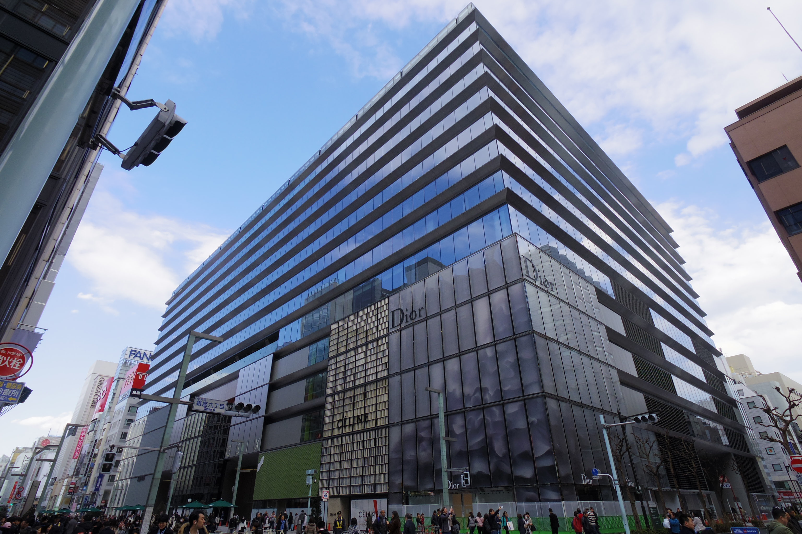
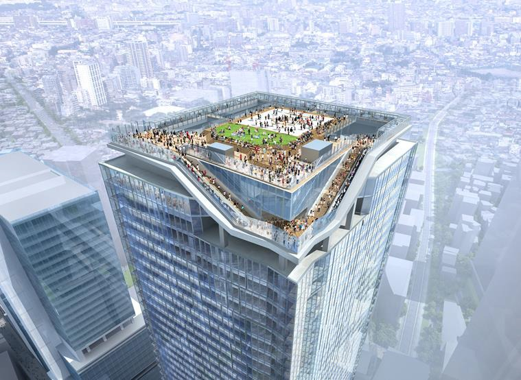
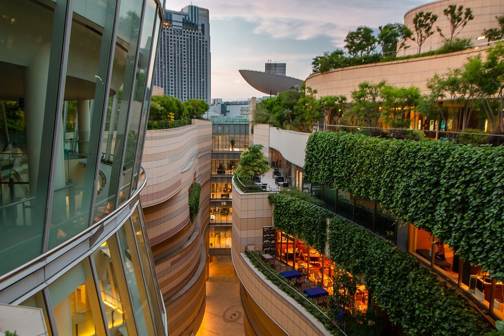
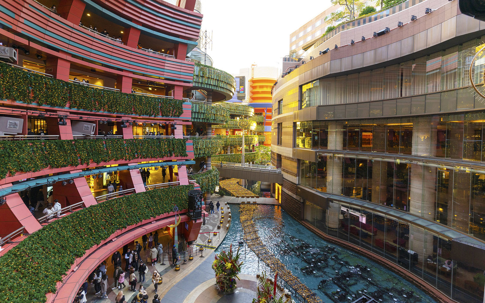
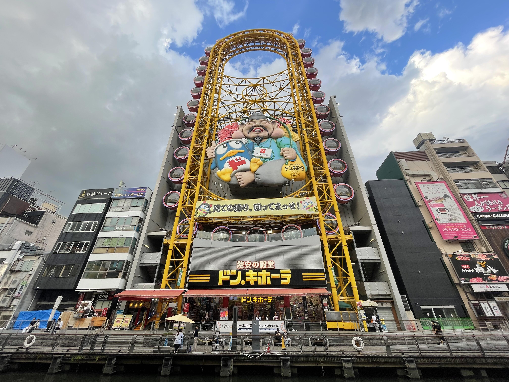
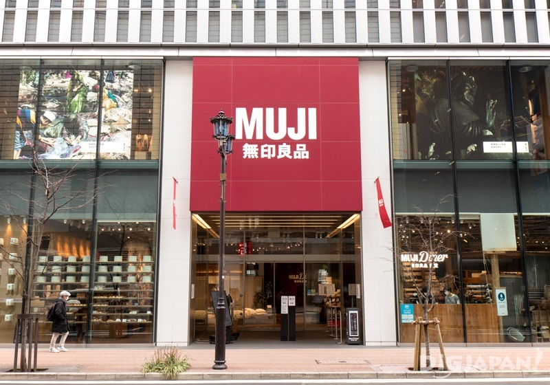
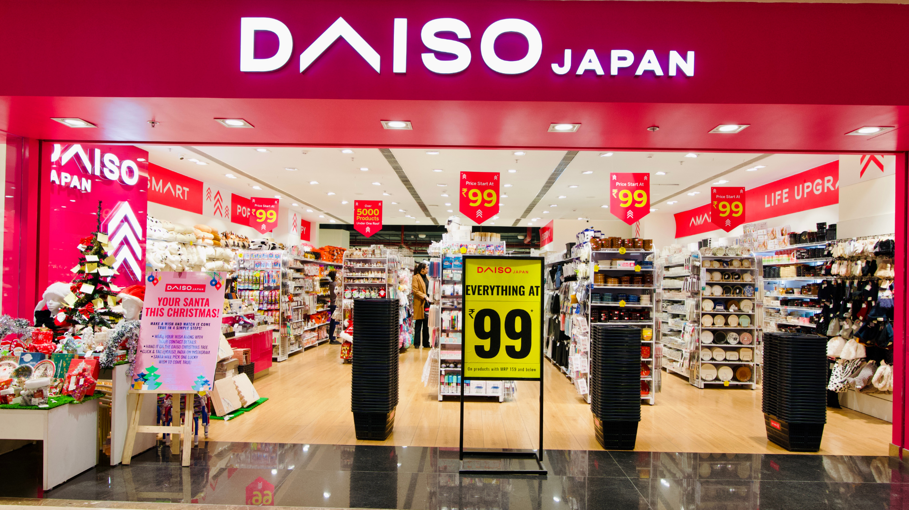
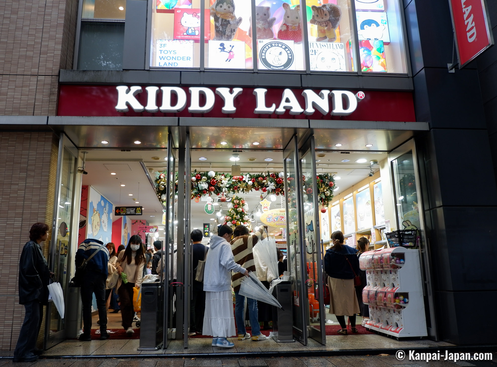

GINZA SIX - TOKYO
Located in Tokyo’s upscale Ginza district, Ginza Six is a luxury shopping complex featuring high-end international and Japanese brands. The mall also includes art installations, fine dining, and a beautiful rooftop garden with city views. It’s ideal for those looking for a premium shopping experience.

SHIBUYA SCRAMBLE SQUARE - TOKYO
Right next to Shibuya Station, this modern mall is part of one of Tokyo’s tallest buildings. It offers a mix of trendy fashion, cosmetics, and tech, plus an observation deck called “Shibuya Sky” that provides a 360-degree view of the city. It’s a great stop after crossing the famous Shibuya Crossing.

NAMBA PARKS - OSAKA
Namba Parks is a stylish and unique mall built into a canyon-like structure with gardens on its rooftop. Located in the lively Namba area of Osaka, it features a variety of shops, restaurants, and even a cinema. The architecture and open-air spaces make it a fun place to explore.

CANAL CITY HAKATA - FUKUOKA
Often called a “city within a city,” Canal City in Fukuoka blends shopping, entertainment, dining, and even a canal that runs through the complex. It has fashion stores, themed restaurants, a theater, and regular fountain shows, making it a top destination in southern Japan.

DON QUIJOTE
Don Quijote, affectionately known as Donki, is a quirky, multi-floor discount store found all over Japan. It sells everything from snacks and cosmetics to electronics and novelty items. The shop is a treasure trove for tourists, offering a variety of affordable souvenirs, unique Japanese products, and sometimes even tax-free shopping for international visitors.

MUJI
Muji, the minimalist Japanese retail brand, offers a wide range of products, from home goods to clothing, stationery, and food. The store focuses on simplicity, quality, and functionality. It’s a perfect place to pick up simple, elegant Japanese design products that are practical and easy to take home.

DAISO
Daiso is a budget-friendly store where most items cost around 100 yen (about $1 USD). You can find high-quality home goods, stationery, kitchenware, beauty items, and cute Japanese souvenirs. It’s a great place for travelers who want to bring home fun and affordable gifts.

KIDDY LAND
Kiddy Land is a must-visit for fans of Japanese pop culture, especially families or those looking for unique toys, anime merchandise, and character goods. Located in Harajuku, this iconic store features popular Japanese characters like Hello Kitty, Pokémon, and Totoro, along with limited-edition items. It’s a fun stop for all ages.